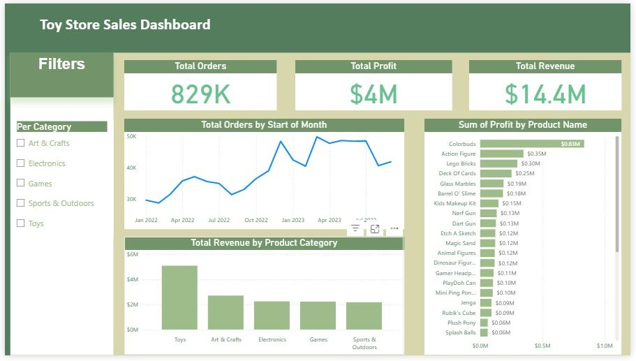

Projects
Dashboards that turn data into business decisions. Each project links to its files on GitHub.

Toy Store Sales Dashboard
An interactive sales dashboard for a retail toy business. It shows 829K orders, $14.4M revenue and $4M profit, with a category filter and product-level profit.
Questions it answers
- What are total orders, revenue and profit?
- How do orders change month by month?
- Which products and categories earn the most?
Features
- KPI cards
- Monthly order trend
- Revenue by product category
- Profit by product
- Category filter
Business value
- Spot the most profitable products
- Track sales trends
- Support inventory and revenue decisions
Tools: Power BI, Power Query, DAX, data modeling · View on GitHub
Real Estate Property Management Dashboard
A three-page report (Overview, Location, About) covering 22K properties, built so decision makers can see which properties need attention. Data source: Kaggle.
Questions it answers
- What condition are the properties in?
- How many are renovated or waterfront?
- How do states and floor types compare?
Features
- Condition split: 70% very good, 14% good, 16% bad
- Map and tables by state and floor
- Build-year trend
- Page navigation buttons
Business value
- Find properties that need a quick fix
- Compare locations side by side
- Support property decisions with data
Tools: Power BI, Power Query, DAX, relational data modeling · View on GitHub
Excel Data Analytics Portfolio
Sales Analysis Dashboard, Sales Analysis Full Project and Billionaires Analysis, all built entirely in Excel.
Skills shown
- Pivot tables and pivot charts
- Data cleaning with Power Query
- XLOOKUP and INDEX/MATCH
Also covers
- KPI development
- Conditional formatting
- Executive reporting
Tools: Excel, Power Query · View on GitHub